isentropic_process
Converts any ratio to any other ratio in an isentropic process involving a calorically perfect gas.
Back to Compressible Flow Toolbox Contents
Contents
Syntax
Q_out = isentropic_process(spec_in,Q_in,spec_out) Q_out = isentropic_process(spec_in,Q_in,spec_out,gamma)
Input/Output Parameters
| Symbol | Variable | Description | Format | |
| Input | - | spec_in | specifies input quantity (see options below) | 1×1 char |
| Q_in | input quantity (specified by spec_in) | 1D double array |
||
| - | spec_out | specifies output quantity (see options below) | 1×1 char |
|
| gamma | (OPTIONAL) specific heat ratio, defaults to 1.4 | 1×1 double |
||
| Output | Q_out | output quantity (specified by spec_out) | 1D double array |
Options for spec_in and spec_out:
- 'T2/T1' = static temperature ratio (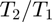)
- 'P2/P1' = static pressure ratio (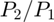)
- 'h2/h1' = static enthalpy ratio (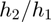)
- 'rho2/rho1' = static density ratio (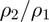)
- 'a2/a1' = speed of sound ratio (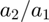)
- 'Tt2/Tt1' = stagnation temperature ratio (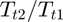)
- 'Pt2/Pt1' = stagnation pressure ratio (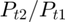)
- 'ht2/ht1' = stagnation enthalpy ratio (
 )
) - 'rhot2/rhot1' = stagnation density ratio (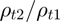)
- 'at2/at1' = stagnation speed of sound ratio (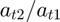)
Example #1: Static pressure ratio from static temperature ratio (in air).
Static pressure ratio from a static temperature ratio of 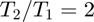.
T2_T1 = 2; P2_P1 = isentropic_process('T2/T1',T2_T1,'P2/P1')
P2_P1 = 11.313708498984763
Example #2: Static temperature ratio from static pressure ratio (in air).
Static temperature ratio from a static pressure ratio of 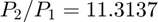 (from Example #1, we know we should get ).
P2_P1 = 11.3137; T2_T1 = isentropic_process('P2/P1',P2_P1,'T2/T1')
T2_T1 = 1.999999570736331
Example #3: Static density ratio from stagnation pressure ratio (in helium).
Static density ratio from a stagnation pressure ratio of 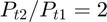 in helium (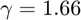).
Pt2_Pt1 = 2; gamma = 1.66; rho2_rho1 = isentropic_process('Pt2/Pt1',Pt2_Pt1,'rho2/rho1')
rho2_rho1 = 1.640670712015276